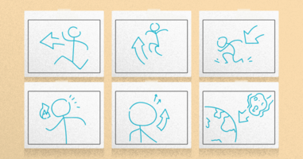
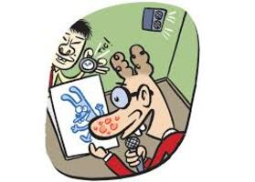
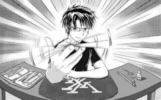

A produção de um desenho animado começa longe das pranchetas. Primeiro, é preciso escrever um roteiro com as indicações principais sobre a história. Esse roteiro dá origem a um storyboard, uma espécie de história em quadrinhos com as principais cenas do desenho. Só para dar uma idéia, o storyboard de um filminho de sete minutos costuma ter de 200 a 250 quadrinhos.

A etepa seguinte é detalhar as cenas do storyboard, gravando a história em quadrinhos em vídeo. Para definir o tamanho de cada cena, os próprios animadores imitam as falas dos personagens. Essa espécie de "rascunho" de som e imagem forma o rolo da história, uma fita de vídeo que serve de base para as próximas fases da produção.

Com o rolo da história na mão, os animadores iniciam o planejamento do desenho, definindo cenários, enquadramentos, expressões e posicionamento do personagem. Depois de tudo decidido, entra em cena a equipe de desenhistas. A produção é segmentada: uma equipe cuida do cenário e outra da vida aos personagens.

Nessa fase, os desenhos ainda são riscados a lápis, direto em folhas de papel. Toda essa montanha de rabiscos mais o rolo da história ficam guardados na partitura de animação, uma grande pasta com as informações essenciais da produção: a base de som para os dubladores, o planejamento de cada imagem e os desenhos que depois ganham tinta e cor.
Todas essas informações são analisadas pelo diretor de animação. Ele verifica se as falas cabem em cada cena e se o movimento dos personaens está legal. Para que a animação fique perfeita, cada segundo de desenho precisa de pelo menos 24 desenhos. Um simples "Oi, tudo bem?", de um segundo e meio, consome 36 desenhos!
Depois que o diretor analisou o movimento e a evolução das cenas, a equipe de arte final entra em ação. Nessa fase os desenhos recebem um traço a tinta. Depois, eles são escaneados e pintados no computador. Em uma animação de sete minutos, quase 200 mil folhas de sulfite passam por esse processo.
O passo seguinte é a Composição da animação. Coma a ajuda de um programa de computador, os desenhos dos personagens são inseridos no cenário e a sequência da animação é montada. Depois disso, o filminho digital fica gravado no disco rígido do computador. Por meio de outro software, ele é convertido para película, dando origem a um rolo de filme.
Ainda falta gravar o áudio final. Em um estúdio de som, os dubladores dão voz aos personagens e os sonoplastas acrescentam efeitos sonoros. Por último acrescenta-se a película e a trilha de áudio vão para um laboratório onde som e imagem são mixados. E o rolo de filme está pronto.


.jpg)